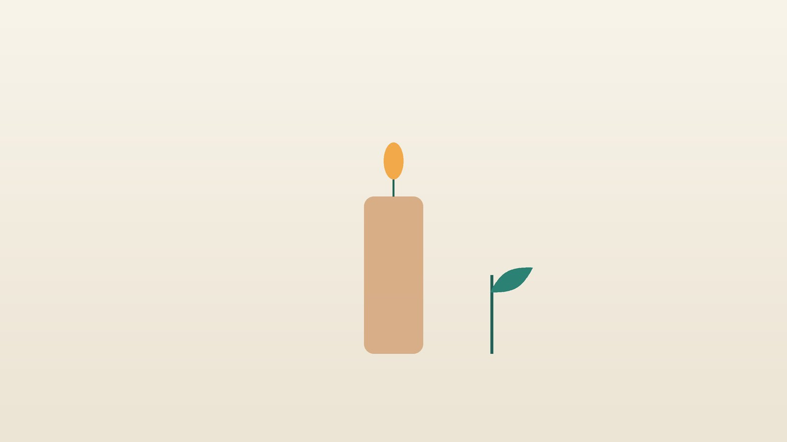

건강 칼럼 · 인천 번아웃 한의원
일에 지쳐 아무것도 하기 싫다면, 번아웃 한방 관리

나의 상태, 이런 모습인가요?
- 주말 내내 쉬어도 월요일 아침이 감당이 안 될 만큼 지쳐 있다
- 예전엔 보람 있던 일이 무의미하고 동료와 고객에게 냉소적이 된다
- 집중이 안 되고 실수가 늘어 일을 해낼 자신이 없다
- 퇴근 후에도 일 생각에 잠들기 어렵고 새벽에 깬다
- 두통, 뒷목 뻣뻣함, 소화 불량, 잦은 감기가 이어진다
- 휴가를 떠올리면 잠시 나아지지만 복귀하면 금방 원래대로 돌아간다
이 체크리스트는 진단 도구가 아니라 상담이 필요한지 가늠해 보는 참고용입니다.
번아웃은 무엇이고 우울증과 어떻게 다른가요?
WHO는 2019년 ICD-11을 확정하며 번아웃(QD85)을 '성공적으로 관리되지 않은 만성적 직장 스트레스로 인한 증후군'으로 정의했습니다. 핵심은 에너지가 고갈된 느낌, 일에서 마음이 멀어지거나 부정적·냉소적으로 변하는 것, 직업적 효능감이 줄어드는 것의 세 가지이며, WHO는 이 용어를 직업 상황에만 쓰고 다른 생활 영역의 경험에는 쓰지 않도록 했습니다. 질병 장이 아닌 '건강 상태에 영향을 주는 요인' 장에 실려 있다는 점도 특징입니다.
우울증은 일뿐 아니라 가족, 취미, 식사 같은 삶 전반에서 즐거움이 사라지고 우울한 기분이 2주 이상 거의 매일 이어지며, 휴가를 떠나도 나아지지 않는 경우가 많습니다. 번아웃으로 시작해도 오래 방치하면 우울증과 불안장애로 이어질 수 있어, 두 상태가 겹치는지 살피는 것이 중요합니다.
바로 도움을 요청하거나 정신건강의학과 진료가 먼저인 신호
- 죽고 싶다는 생각이 들거나 방법을 찾아본 적이 있다 → 자살예방상담전화 109 (24시간)
- 2주 넘게 거의 매일 우울하고 일 밖의 모든 일에도 흥미가 없다
- 잠을 거의 못 자거나 반대로 하루 종일 누워 지낸다
- 잠들기 위해 술이나 수면제를 점점 더 많이 찾는다
- 가슴 통증, 숨참, 두근거림이 갑자기 심해졌다
- 체중이 크게 줄거나 피로가 극심해 갑상선·빈혈 같은 내과 질환이 의심된다
자신이나 가까운 사람에게 위험이 느껴진다면 109에 전화하거나 119, 가까운 응급실로 가세요. 깊은 우울과 불면은 정신건강의학과 치료가 먼저이며, 한방 치료는 그와 함께 받을 수 있습니다.
한의학은 번아웃을 어떻게 보나요?
한의학에는 지나친 일과 걱정으로 몸이 상하는 것을 가리키는 노권상(勞倦傷)이라는 말이 있습니다. 『동의보감』은 내상(內傷) 편에서 음식으로 상한 것과 나란히 과로로 상한 것을 다루며, 팔다리에 힘이 없고 말하기도 귀찮으며 움직이면 숨이 차는 모습을 설명했는데, 오늘날 번아웃의 기력 소진과 많이 닮았습니다.
여기에 하고 싶은 말을 삼키고 감정을 눌러 기의 흐름이 막힌 간기울결(肝氣鬱結), 걱정이 많아 소화와 잠을 맡은 기운이 함께 지친 심비양허(心脾兩虛)가 겹치는 경우가 흔합니다. 그래서 기운을 북돋는 치료와 막힌 것을 풀어 주는 치료의 비율을 사람마다 다르게 정하는데, 무엇보다 쉬어도 채워지지 않는 몸의 바탕을 먼저 회복시키는 데 둡니다.
나는 어떤 유형일까?
1. 비기허(脾氣虛) 방전된 유형
- 이런 분에게 많아요
- 야근과 과로가 수개월 이어진 분
- 나타나는 모습
- 아침에 몸이 천근만근이고 말하기도 귀찮다
- 함께 오는 몸의 신호
- 식욕 저하, 묽은 변, 오후 졸림, 잦은 감기
- 진찰에서 보이는 모습
- 혀가 담백하고 이 자국이 있으며 맥이 약함
- 치료 방향
- 지친 기운을 끌어올리는 방향 (보중익기탕 계열)
- 오늘부터 해 볼 것
- 점심 뒤 15분 햇볕 아래 걷기를 해 보세요.
2. 간기울결(肝氣鬱結) 꾹 참다 막힌 유형
- 이런 분에게 많아요
- 책임감이 강하고 감정을 드러내지 않는 분
- 나타나는 모습
- 짜증과 냉소가 늘고 가슴이 답답하며 한숨이 잦다
- 함께 오는 몸의 신호
- 뒷목·어깨 뭉침, 두통, 소화 불량, 생리 불순
- 진찰에서 보이는 모습
- 맥이 팽팽하고 옆구리 아래 압통
- 치료 방향
- 막힌 기를 풀고 긴장을 덜어 주는 방향 (소요산 계열)
- 오늘부터 해 볼 것
- 하루 한 번 일과 관계없는 사람과 대화하세요.
3. 심비양허(心脾兩虛) 걱정에 지친 유형
- 이런 분에게 많아요
- 실수를 걱정하며 일을 붙잡고 있는 분
- 나타나는 모습
- 잠이 얕고 꿈이 많으며 일을 시작할 자신이 없다
- 함께 오는 몸의 신호
- 두근거림, 건망, 식후 더부룩함
- 진찰에서 보이는 모습
- 얼굴빛이 누렇고 혀가 담백하며 맥이 가늘다
- 치료 방향
- 마음과 소화의 기운을 함께 채우는 방향 (귀비탕 계열)
- 오늘부터 해 볼 것
- 퇴근 후 업무 메신저 알림을 꺼 두세요.
4. 음허화왕(陰虛火旺) 타 버린 유형
- 이런 분에게 많아요
- 오래 밤샘하고 커피·에너지 음료로 버틴 분
- 나타나는 모습
- 몸은 지쳤는데 머리는 과열되어 잠들지 못한다
- 함께 오는 몸의 신호
- 입 마름, 얼굴 열감, 식은땀, 이명
- 진찰에서 보이는 모습
- 혀가 마른 듯 붉고 설태가 거의 없으며 맥이 가늘고 잦음
- 치료 방향
- 진액을 보태 들뜬 열을 가라앉히는 방향 (천왕보심단 계열)
- 오늘부터 해 볼 것
- 오후 2시 이후 카페인을 끊어 보세요.
한의원에서는 어떻게 진찰하나요?
- 상태 점검: 소진, 냉소, 효능감 저하의 정도와 우울·불안 선별 문항을 함께 확인합니다.
- 일과 생활: 근무 시간, 수면, 식사, 운동, 음주와 카페인 습관을 여쭙니다.
- 검사 결과 확인: 건강검진의 갑상선 기능, 빈혈, 간 기능 결과와 드시는 약을 살핍니다.
- 설진·맥진·촉진: 혀와 맥, 목·어깨의 뭉침과 복부 긴장으로 유형을 판단합니다.
침·약침·한약 치료는 어떻게 하나요?
1. 침 치료
- 백회(百會)·인당(印堂): 머리 꼭대기 한가운데, 양 눈썹 사이. 과열된 머리를 식히고 마음을 가라앉힙니다.
- 내관(內關): 손목 안쪽 주름에서 팔꿈치 쪽으로 손가락 세 마디, 두 힘줄 사이. 가슴 답답함과 두근거림을 덜어 줍니다.
- 태충(太衝): 발등 위쪽, 엄지와 둘째 발가락 뼈 사이를 발목 쪽으로 쓸어 올리다 멈추는 오목한 자리. 막힌 기를 풀어 줍니다.
- 족삼리(足三里)·기해(氣海): 무릎 아래 바깥쪽으로 손가락 네 마디, 배꼽 아래 손가락 두 마디. 지친 기운을 북돋습니다.
2. 약침
업무 자세로 단단하게 굳은 뒷목과 어깨, 등의 근육에 약침을 놓아 몸의 긴장부터 풀어 줍니다.
3. 한약
탕약으로 바닥난 기운을 채우고 막힌 기를 풀어 수면과 소화를 돕는 것을 목표로 합니다. 증상이 가벼운 경우 한약 치료를 중심으로 관리하기도 하며, 우울과 불면이 깊으면 정신건강의학과 치료를 함께 받으세요. 항우울제나 수면제를 드신다면 알려 주시면 확인해 처방합니다.
원장님이 네이버 블로그에 진료 이야기와 건강 정보를 꾸준히 올리고 있습니다. 더 많은 이야기는 블로그에서 확인해 보세요.
블로그 보기회복은 어떤 순서로 진행되나요?
- 첫 진료 위험 신호와 우울증 여부를 확인하고 소진 정도와 수면 시간을 기록합니다.
- 1~4주 주 1~2회 침 치료와 약침, 탕약으로 잠과 피로부터 회복합니다.
- 5~8주 점수를 비교해 처방을 조정하고, 일의 양과 경계를 다시 세우는 생활 계획을 함께 점검합니다.
- 유지기 재발 신호(주말에도 회복이 안 됨, 냉소 증가)를 정해 두고 그때 일찍 관리합니다.
번아웃은 일의 환경이 그대로면 다시 찾아오기 쉬워, 몸의 회복과 함께 일하는 방식을 조정하는 것이 중요합니다.
번아웃에서 회복하는 생활 습관
- 경계 세우기: 퇴근 시각 이후 업무 연락을 확인하지 않는 시간을 정해 지킵니다.
- 작은 회복 시간: 90분 일하면 5분은 자리에서 일어나 창밖을 보거나 걸으세요.
- 몸 움직이기: 주 3회 30분 걷기는 기분과 잠을 함께 돕습니다.
- 도움 요청: 업무량 조정은 혼자 버티지 말고 상사나 회사의 상담 프로그램을 활용하세요.
- 혈자리 지압: 점심시간에 내관을 엄지로 10초씩 다섯 번 누르며 숨을 길게 내쉬어 보세요.
다른 진료가 함께 필요한 경우
- 죽고 싶다는 생각이 들면 109에 전화하고 정신건강의학과 진료를 받으세요.
- 우울감이 2주 넘게 이어지면 우울증 평가가 필요합니다.
- 극심한 피로가 계속되면 갑상선, 빈혈, 수면무호흡 검사를 받아 보세요.
- 술에 의존하게 되었다면 중독 상담을 함께 받는 것이 좋습니다.
자주 묻는 질문 Q&A
- Q1. 번아웃은 병인가요?
- WHO는 번아웃을 질병이 아닌 직업 관련 현상으로 분류합니다. 다만 오래되면 우울증, 불안, 신체 질환으로 이어질 수 있어 관리가 필요합니다.
- Q2. 쉬면 저절로 낫나요?
- 충분한 휴식이 첫걸음이지만, 일의 환경과 습관이 그대로면 다시 지치기 쉽습니다.
- Q3. 우울증인지 번아웃인지 어떻게 아나요?
- 일을 떠나서도 즐거움이 없고 우울한 기분이 2주 넘게 이어진다면 우울증을 의심해 평가를 받아 보세요.
- Q4. 항우울제를 먹고 있는데 한약을 같이 먹어도 되나요?
- 함께 드시는 분이 많습니다. 약 이름을 알려 주시면 확인해 처방하며, 처방약은 임의로 중단하지 마세요.
- Q5. 주부나 학생도 번아웃이 오나요?
- WHO 정의는 직업 상황에 한정하지만, 육아·간병·학업으로 비슷하게 지치는 분도 많아 같은 방식으로 몸과 마음을 살핍니다.
- Q6. 치료 기간은 얼마나 걸리나요?
- 보통 8주 정도 소진 점수와 수면을 보며 경과를 확인합니다.
- Q7. 공진단이나 보약을 먹으면 좋아지나요?
- 유형에 맞지 않는 보약은 오히려 답답함이나 열감을 키울 수 있어 진찰 후 처방하는 것이 좋습니다.
- Q8. 회사를 그만둬야 할까요?
- 큰 결정은 잠과 기운이 어느 정도 회복된 뒤에 내리는 것이 좋습니다. 그 전에 업무 조정이나 휴직을 먼저 검토해 보세요.
문원열 대표원장한의사 · 365스마일한의원
인천 서구 가정동 한자리에서 10년 넘게 진료하며, 환자 한 분 한 분의 아픔을 깊이 들여다보고 근본적인 원인을 찾는 진료를 지향합니다.
진료 안내
- 진료시간
- 평일 09:00~20:00 (점심시간 13:00~14:00)
토·일·공휴일 09:00~15:00 - 주소
- 인천광역시 서구 가경주로 46, 2층 (가정동)
인천2호선 가정중앙시장역 인근
영상으로 길 안내 보기 → - 주차
- 한의원 건물 바로 앞 1층 도원주차장
- 예약
- 예약 바로가기 또는 전화 예약
진료시간은 사정에 따라 바뀔 수 있으니 방문 전 전화로 확인해 주세요.
함께 읽으면 좋은 칼럼
건강 칼럼 전체 보기 →
참고 자료
- World Health Organization. Burn-out an "occupational phenomenon": International Classification of Diseases, 2019 — 원문
- 허준, 『동의보감(東醫寶鑑)』 잡병편(雜病篇) 내상(內傷), 노권상
- 질병관리청 국가건강정보포털 — 원문
※ 이 글은 일반적인 건강 정보이며, 개인의 상태에 따라 치료 방법과 결과는 다를 수 있습니다. 정확한 진단과 치료는 진료를 통해 결정됩니다. 침·약침 시술 후 드물게 멍, 통증 등이 생길 수 있습니다.